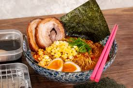

HOME
RAMEN

Description
ramen is a Japanese noodle soup, with a combination of a rich flavoured broth, one of a variety of types of
noodle and a selection of meats or vegetables, often topped with a boiled egg. In Japan ramen is considered a
fast food, with many small restaurants and street vendors offering a warming bowl of this delicious soup.
Ingredients
For the Broth:
- 4 cups chicken or vegetable broth (or a combination)
- 2 cups water
- 2 tbsp soy sauce
- 2 tbsp miso paste (optional, for a richer broth)
- 1 tbsp sesame oil
- 2 cloves garlic, minced
- 1-inch piece of ginger, sliced thinly
- 1/2 onion, sliced
- 1 tbsp rice vinegar
- 1 tbsp mirin (optional)
- 1 tsp sugar
- 1-2 tsp chili paste or chili oil (optional, for heat)
For the Noodles:
- 2 packs of ramen noodles (fresh or instant, without the seasoning packet)
For Toppings (Optional):
- 2 soft-boiled eggs (for the classic ramen topping)
- 2-3 slices of cooked chicken, pork, or tofu
- 1/2 cup corn kernels (optional)
- 2-3 green onions, sliced
- 1/4 cup bamboo shoots (optional)
- 1/4 cup nori (seaweed) strips
- 1/4 cup cooked spinach or bok choy (optional)
- 1 tbsp sesame seeds (optional)
- Chili oil or hot sauce (optional, for extra spice)
Steps
1. Prepare the Broth:
- In a large pot, heat the sesame oil over medium heat.
- Add the minced garlic, sliced ginger, and sliced onion. Sauté for 2-3 minutes until fragrant and softened.
- Pour in the chicken or vegetable broth and water. Stir in the soy sauce, miso paste (if using), rice
vinegar, mirin, and sugar.
- Bring the broth to a simmer and cook for 10-15 minutes, allowing the flavors to meld together. Taste the
broth and adjust seasoning with soy sauce or salt as needed. If you prefer a spicy broth, add chili paste or
chili oil to taste.
- Remove from heat and strain the broth to remove the ginger, garlic, and onion (optional, depending on your
preference for texture).
2. Cook the Noodles:
- In a separate pot, bring water to a boil and cook the ramen noodles according to the package instructions
(usually 3-4 minutes). Drain the noodles and set them aside.
3. Assemble the Ramen:
- Divide the cooked noodles into two serving bowls.
- Pour the hot broth over the noodles in each bowl.
- Add your choice of toppings. Common options include soft-boiled eggs, cooked chicken or pork, corn, green
onions, bamboo shoots, nori, spinach, or bok choy.
- Sprinkle with sesame seeds or drizzle with chili oil for extra flavor, if desired.
4. Serve:
Serve the ramen hot and enjoy your delicious homemade bowl of ramen!